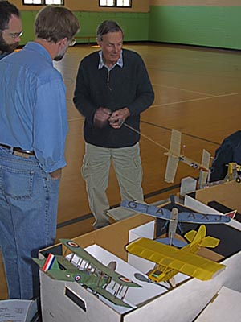
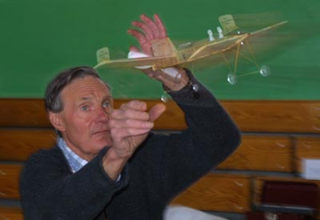

|
Here George Benson demonstrates a most demanding skill; winding a fine scale model while answering questions!
The model is a 1912 Drzewiecki-Canard, built from Beno Sabel plans available from Peck Polymers. This example is a fine vintage flyer and consistently silences the attending crowds. George is a prolific builder, and the other fine models in the foreground were only a sampling of the aircraft he brought on this particular day. As you can see below, launching a pusher demands a bit of attention to avoid the bite of the propellor. |  |
|  | |
|---|---|
Copyright 2001, Thayer Syme. All rights reserved